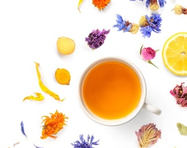
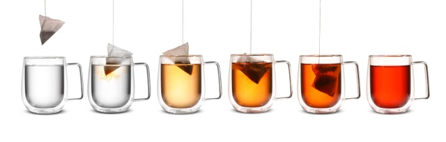
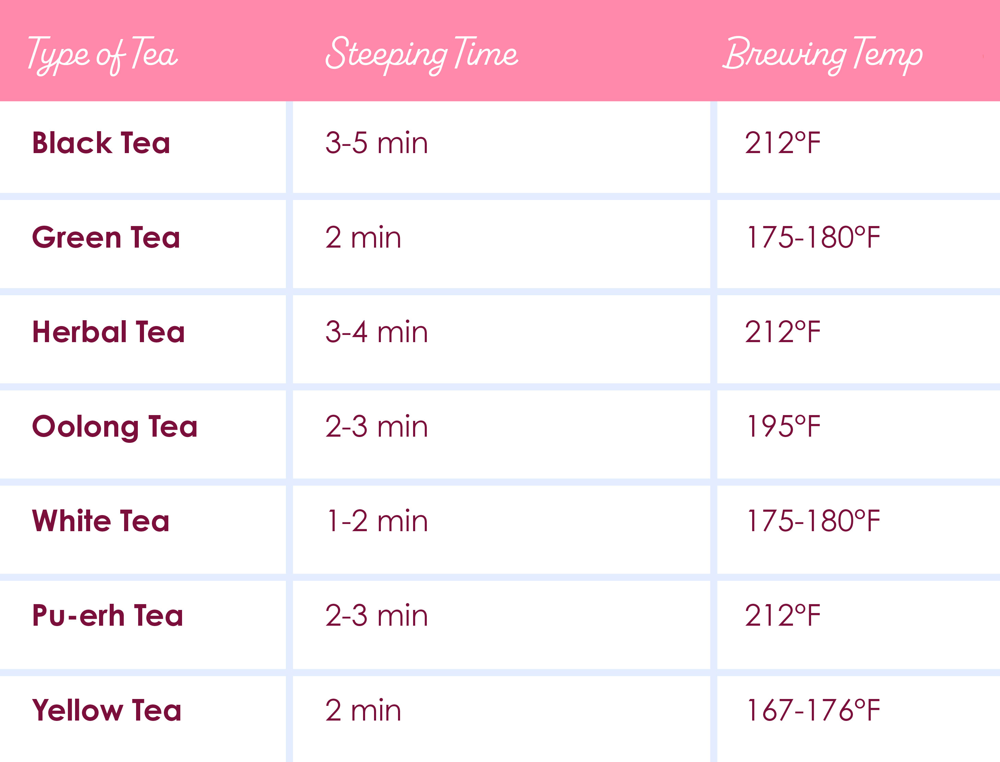

Tea
Kinds of Teas

There are lots of different kinds of teas, what differentiates them is the way the leaves are processed which affect the flavor and color. Different kinds of teas could suit different audiences or occasions, pick carefully!
Main/Common Teas
- Black Tea
Black tea is a dark and rich kind of tea, and more caffeinated than others. - English Breakfast
- Earl Grey
- Chai
- Green Tea
Green tea is made with a different process which preserves the vibrant color of the leaves. It has mild and earthy flavors. - Matcha
- Sencha
- Herbal Tea
Herbal teas are made from herbs, fruits, flowers. They are typically much milder than black or green teas. - Chamomile
- Peppermint
- Rooibos
- Hibiscus
- Lemon,Berry,Orange,etc.



Other Teas
- Yellow Tea
Yellow tea is between green and black tea. It possesses sweet and nutty flavors and is made by fermentation. - Oolong Tea
Oolong is like black tea but processed differently and has a milder taste - White Tea
White tea is delicate and is made from buds of a plant. - Pu-erh Tea
Pu-Ehr tea is made by rolling and fermented dried tea leaves. It is woody and nutty, or plum-ish and mellow, depending on the ripeness.
Tea Preparation
Different kinds of teas require different preparation. If you over or under steep tea it could affect the flavor in a negative way. To ensure your tea is prepared properly refer to this chart.
Drink Ideas
Hot tea is the primary drink of choice for a tea party, but there are some fun iced tea and juice creations that would be fun to have depending on the theme or season!

Heres a list of some recipes:
Drink Recipes! Click Me!Drink Inspiration Board
A Pinterest board to inspire some fun drinks!
 Drink Pinterest Board
Drink Pinterest Board